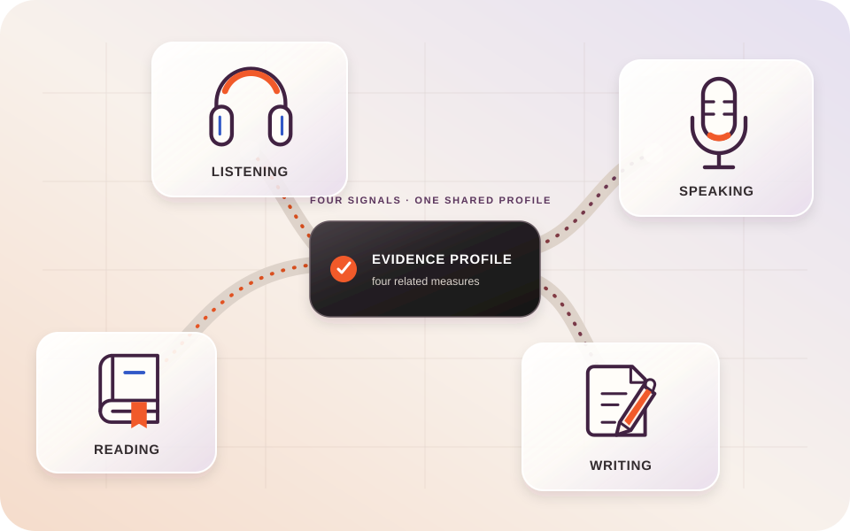

IELTS Test Structure Overview
Understand what each part asks you to do, the evidence it collects, and how to approach instructions precisely.
01 · Orient
One test, four kinds of evidence.
IELTS gathers separate evidence from Reading, Listening, Writing and Speaking. Academic and General Training share Listening and Speaking while Reading and Writing differ.
⌁ Locked structureRich text

Visual explainer · 03:20
Four routes. One evidence profile.
Illustration, accessible description and transcript stay bound to one governed media block.
⌁ Private mediaTranscript ready
Cohort layer
Homework note
Assigned teachers may fill the title and content only. Position, type, course structure and brand treatment remain administrator controlled.
Assigned teacher · content fieldsStructure locked